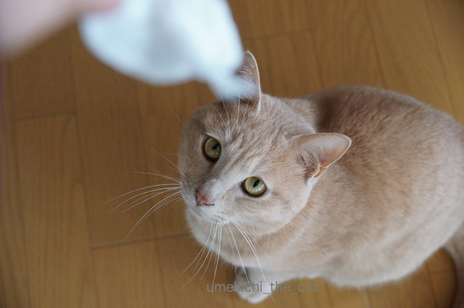
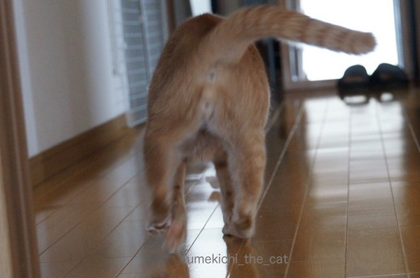
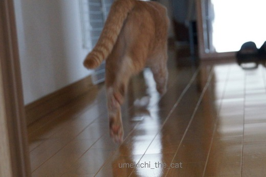
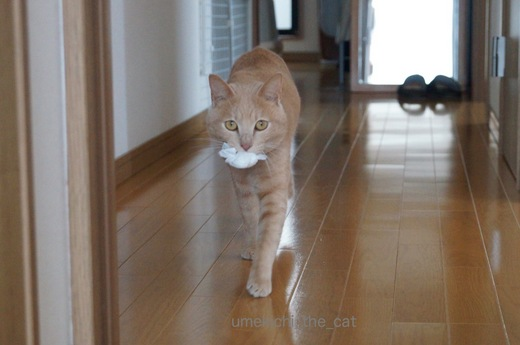
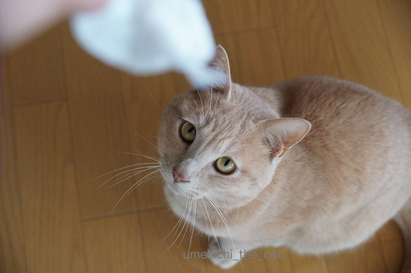
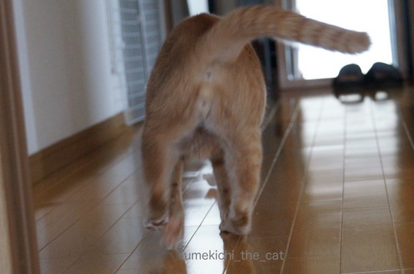
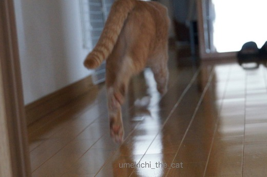
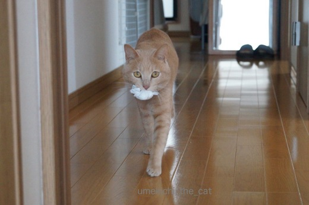

後ろ姿ににやにや [梅吉]
買い物から帰ってきてレジ袋を片付けようとすると走ってくるお方。

これを投げると・・・

ずだだだだだだだ〜〜〜〜〜〜っ




と、勢い良く走っていきます。
おちりとあちがかわいいなぁ・・・とにやにや。
猫は正面からも可愛いけれど後ろ姿もラブリーだよねと思っていたら
フェリシモ猫部でこんな企画をしていました。
イラストだけでたまらないわ〜。ある商品ってなんだろう。
応募してみたいのですが真後ろからのショットで頭からお尻まで切れていない・・・
との応募規定がハードル高し！なのです。

![[猫]](https://blog.ss-blog.jp/_images_e/101.gif) もってきたで〜
もってきたで〜![[ぴかぴか（新しい）]](https://blog.ss-blog.jp/_images_e/150.gif)
後ろ姿も良いけどやっぱり正面が素敵ですよ。梅吉さんは![[黒ハート]](https://blog.ss-blog.jp/_images_e/136.gif)
 ↑ガブッと一押し↑
↑ガブッと一押し↑
もう申し込みを締め切ったあとだった〜(꒦ິ⌑꒦ີ)ねこ検定。
画像はねこ検定HPからお借りしました
次回は絶対受験したい！
練習問題初級は難なく全問正解。
初級はミーハー猫好きの知識で対応できそうですが
中級は問題が学術的になったりして結構難しい・・・
ちなみに５問中３問正解でした。
次回の検定に向けてお勉強しようと決意！！！
そこで前から気になっていた疑問を一つ調べてみましたよ。
モデル協力：umekichi
ちょっと見えにくい写真で申し訳ないんですが・・・・
青丸の部分に２〜3本の長い毛があります。
では、問題！三択です。
問 猫の前足の後ろ側にある２〜3本の長い毛はなに？
１：進化の途中、長毛だった頃の名残の毛
２：ひげ
３：アホ毛
答え ２
顔まわりのヒゲと同様に獲物の捕食、障害物を避けるために大切な感覚器官なようです。
ここ、試験に出るよー。覚えておいてくださいねー。笑

これを投げると・・・

ずだだだだだだだ〜〜〜〜〜〜っ




と、勢い良く走っていきます。
おちりとあちがかわいいなぁ・・・とにやにや。
猫は正面からも可愛いけれど後ろ姿もラブリーだよねと思っていたら
フェリシモ猫部でこんな企画をしていました。
イラストだけでたまらないわ〜。ある商品ってなんだろう。
応募してみたいのですが真後ろからのショットで頭からお尻まで切れていない・・・
との応募規定がハードル高し！なのです。

後ろ姿も良いけどやっぱり正面が素敵ですよ。梅吉さんは
もう申し込みを締め切ったあとだった〜(꒦ິ⌑꒦ີ)ねこ検定。
画像はねこ検定HPからお借りしました
次回は絶対受験したい！
練習問題初級は難なく全問正解。
初級はミーハー猫好きの知識で対応できそうですが
中級は問題が学術的になったりして結構難しい・・・
ちなみに５問中３問正解でした。
次回の検定に向けてお勉強しようと決意！！！
そこで前から気になっていた疑問を一つ調べてみましたよ。
モデル協力：umekichi
ちょっと見えにくい写真で申し訳ないんですが・・・・
青丸の部分に２〜3本の長い毛があります。
では、問題！三択です。
問 猫の前足の後ろ側にある２〜3本の長い毛はなに？
１：進化の途中、長毛だった頃の名残の毛
２：ひげ
３：アホ毛
答え ２
顔まわりのヒゲと同様に獲物の捕食、障害物を避けるために大切な感覚器官なようです。
ここ、試験に出るよー。覚えておいてくださいねー。笑

カフェオレ色の梅吉

梅吉 2023年8月10日 永眠


梅吉と出会った譲渡会

犬猫の理由なき殺処分ゼロ
妄想広告
UMEKICHI 光

爆発的に早い！
時々攻撃的！
Thanks to Mr.Boss365
爆発的に早い！
時々攻撃的！
Thanks to Mr.Boss365

イヤ〜「もってきたで〜」って可愛いのぅ。
by kiki (2017-03-16 15:56)
フェリシモ猫部の企画おもしろそうですね。何の商品になるのやら。
ネコ検定私も初級は全問正解！エッヘン！でも、猫の前足の後ろ側にある２〜3本の長い毛がヒゲとは知りませんでした～～。
by palpal (2017-03-16 16:18)
梅吉さんは後ろも正面の可愛いのです♪
by きぃ (2017-03-16 16:49)
3枚目の写真がムチャかわゆいですが何だかウチのドンごろーみたい(!?)
くわえて戻ってくる所はすらっとしたカッコイイ梅吉さん!
猫検定私は中級も全問正解! (まぐれ~?)
知識はあっても全然活かせないズボラな猫飼いです。
by zombiekong (2017-03-16 18:11)
あぁ〜真後ろからって無い〜(・o・)
5年以上も一緒に居るのに…。
色んな写真を撮ってあげなくちゃ、と決意！！(^^;
でも遊びながら写真も撮るっていうのが難しいですよねぇ。
by も〜 (2017-03-16 20:55)
猫検定の本、買いました(^_-)-☆
結構難しいですよね～あ、でも今日のヒゲは正解でした♪
写真、どうしても顔を撮りたいので真後ろって少ないです・・・。
お尻尾ピ～ンだとオチリがクッキリ写っちゃいますしね^^;
私も3枚目が好き♪
脚の開き具合がキュートです！
by ゆきち (2017-03-16 21:04)
真後ろからの梅吉君、イイですねー！
ピンクのにくきう、ぽってりしたフトモモ、おチリまで可愛い…
確かに前脚の後ろに毛が生えてますね！何かは知らんかった〜知らんかった〜
猫検定中級は1問しか…´д` ;
明日からガーネットのあとをつけて勉強しなきゃ´д` ;
by BillK-ko (2017-03-16 21:14)
真後ろからのショットって難しいですね！
しかもしっぽまで切れていない写真かー。
たぶん無いな(笑)
梅吉さんは、前からの写真がやっぱりGOODだよー！
その凜としたお顔いけてます^^
by リュカ (2017-03-16 21:16)
梅吉さんの後姿も可愛いですねー♪ ^^)
猫の前足の後ろ側の毛、は、2.のヒゲかなあ。
と言いますか、長い毛があることすら知りませんでした。
うちのやつの場合、全部ヒゲになっちゃうかも。^^;
by yes_hama (2017-03-16 21:40)
おお！くわえてもってくるんですね！かわいい！
by みぃにゃん (2017-03-16 22:26)
うちは白雪さんがもってこいしますよーヽ(*´∀｀)ノ
梅吉さん可愛いですーヾ(*´∀｀*)ﾉ
by sumi-cyan (2017-03-16 23:59)
検定問題難しい。。。
中級の最後のやつ、気に入らない人への嫌がらせ、って
かなりキツイわー(^_^;)
人間やったら？と想像すると、かなりシュールな絵が(@_@)
by よーちゃん (2017-03-17 08:12)
そうそう、ニャンコって後ろ姿も可愛いんですよねぇ=(^.^)=
あのプリっとしたお尻にしなやかな後ろ足（≧∇≦）
うちのかみさんはしょっちゅうニャンズのお尻をポンポンしてますw
梅吉さん、ちゃんと袋を持ってくるなんて偉いなぁ( ^ω^ )
by ニッキー (2017-03-17 09:00)
私も３枚目のおちりに萌え～～～♡です。
猫の前足の後ろ側にある２〜3本の長い毛は知っていました。
お茶碗や花瓶などを売っているお店の看板ネコが
なぜ、陶器を壊さず歩き回れるのか？という事を番組で
やっていました。
それを知ってから、なぜ私のデスクに乗って３つある
マウスを蹴りもせずに歩けるのか？納得した次第です（＾O＾）
by Moon (2017-03-17 11:15)
kikiさん＞本にゃんのお得意げな表情を愛でる気持ちと
「おうおう！持ってきたですか〜良い子ちゃんですね〜」という気持ちが
ごちゃ混ぜになって100倍に膨らんでもう本当に可愛いのです(ﾉ≧▽≦)ﾉ
（親バカ、ｽﾐﾏｾﾝ・・・・・）
palpalさん＞商品に愛猫のおちりがプリントされるなんてねー。
気になります！
でも後姿が採用されるなんて相当なインパクトが必要かしらね・・・
きぃさん＞梅吉の裏表、両面褒めていただけるなんて(⌯¤̴̶̷̀ω¤̴̶̷́)✧
きぃさんも相当な猫マニアだわ！
zombiekongさん＞ドンごろー様に似ているとは！なんと光栄な！！
梅吉も最近貫禄と・風格が身についてきたのでしょうか・・・
中級問題全問正解とは素晴らしいですね〜。私も頑張らなくちゃ・・・
も〜さん＞マニアなも〜さんならゆづくんを様々な角度から
余すところなく撮影されているんじゃないかと思ってました（＾◇＾）
一緒に遊びながら可愛い写真を撮るのは至難の技。
まず、カメラを片手でホールドし続ける腕力が必要かと・・・^^;
ゆきちさん＞猫検定本、もうお持ちでしたか！
第一回目が終わったら傾向と対策の「赤本」みたいなのが出るのでしょうか・・
オチリがクッキリ写っているのは猫変態としてなんの問題もなく
むしろ堂々と商品にしていただきたいくらいです•̀.̫•́✧
BillK-koさん＞私も「ひげ」というのは昨日知りましたよ〜。
「梅吉のアホ毛〜♬」と言いながら毎日引っ張ってましたから。笑
ガーネット先生は色々教えてくれるタイプかしら
「わたしの背中から学ぶにゃ・・・」というタイプかしら〜。
リュカさん＞いざ写真ライブラリーを見直すと同じような写真がわんさかと・・・
バリエーション豊富とはなかなか行かないよね〜。
梅吉の得意げな表情なかなかでしょう？(๑•̀ㅂ•́)و✧
yes_hamaさん＞アズくんは手のヒゲが埋もれてしまっているのかな？
長毛種さんは長毛よりもさらに長い手のひげが「びょ〜ん」と
伸びているのかな・・・と思っていたのですが違うようですね＾＾
by ちぃ (2017-03-17 15:51)
みぃにゃんさん＞梅吉は投げたおもちゃを持ってくるんですよ〜。
犬みたいでしょ〜笑。動画もあります。お時間のあるときにでもどうぞ♬
http://umekichi-the-cat.blog.so-net.ne.jp/2017-01-23
sumi-cyanさん＞おお〜！梅吉もエライけど（笑）白雪さんもエライですね〜。
よーちゃん＞あ、練習問題チャレンジされましたか！
動物の習性って面白いですよね〜。
抗議のおしっこなんて動物ならでは！
ニッキーさん＞ゴッドマザー様もおしりフェチなんでしょうか。仲間〜！
近くにいるとついつい触りたくなっちゃいます。
おもちゃは持ってきて偉いのですが「なげてや〜」と延々とつづきます。涙
Moonさん＞「長い毛」の事、ご存知でしたか！さすがです！！
前足では上手くよけてゆくのに後足で色々なものを蹴飛ばす梅吉・・・
前足の記憶したことが後ろ足に伝わってないんでしょうか〜。
ガサツなだけ？^^;
by ちぃ (2017-03-17 19:58)
梅吉さん、ぴょんぴょん、可愛いです〜♡
でも、捕らえて戻ってきたドヤ顔♪ イケメンね〜♪
猫検定･･･ わたし、うっかり3番を選んじゃうわ(^_^;
by のらん (2017-03-18 11:13)
のらんさん＞もうすぐ２歳の梅吉はまだ子供みたいに遊びます♪
３番！私も！！「梅吉のアホ毛〜♬」と毎日引っ張っているので
習慣として手が勝手に◯してしまいそうです〜。
by ちぃ (2017-03-18 17:16)
私もニャンコの後ろ姿、大好き♫
なかでも後頭部に、萌え萌えですw
梅吉さん。ちゃんと持ってきてくれるんですね。
エライっ！！
by morichan (2017-03-18 21:52)
morichanさん＞後頭部好き一緒です〜♪
特に窓外のスズメに夢中になって
お耳が平べったくなったまあるい頭が大好物ですw
梅吉はわんこみたいに取ってこいが得意なんですよ。
人懐っこい性格といい犬疑惑が・・・^^;
ジャンピング取ってこい、お時間のあるときにでもどうぞ〜。
http://umekichi-the-cat.blog.so-net.ne.jp/2017-01-23
by ちぃ (2017-03-19 15:08)
ワンちゃんでも持ってこない仔がいると言うのに
梅吉さんはお利口さんですね～( ^)o(^ )
by makkun (2017-03-20 09:08)
makkunさん＞待てもお手もできませんが
取ってこいだけは出来る梅吉です＾＾
もちろん自分の気の向いた時のみ！
下僕の命令には決して従ってくれません・・・^^;
by ちぃ (2017-03-20 14:00)